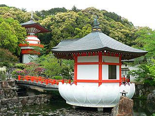
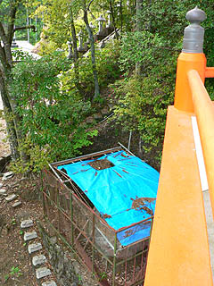
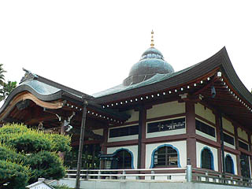
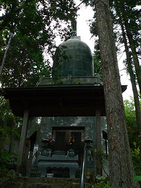

正観寺；その3
リアル奪衣婆に追い立てられるようにして八大地獄を出て、お次はお寺本体に向かう。
この正観寺を語る際、どうしても地獄にばかり目が行きがちだが、これだけの立体電動地獄を作るお寺だけにお寺自体も結構変わっている。
というか地獄抜きにしても立派な珍寺なんです。
山門を潜っていきなり現れる水子供養塔。
池の上に建つその建物は蓮の華を象ったもの。

さらにその奥には朱に塗られてなければ仏塔かどうかすら怪しいデザインの塔が。
そのまま宇宙に飛んでっちゃうんじゃないかと思える程変わったカタチだ。
早速中に入ってみる。
内部は螺旋階段で上部まで行く事ができる。
そして気になりすぎる販売機を発見。
福玉自動販売機
福玉は廻り廊下下に出て福笑いの口へ投げ入れて下さい。
福玉はお持ち帰りにならないで下さい。
むむむ。
とりあえず硬貨を入れる前に回り廊下に出て福笑いの口を探すが、そのようなものは見当たらない。
あ、もしかしてコレ？
残念ながら福笑いはお休みのようです。
あ〜硬貨入れないで良かった・・・

さてさて、塔を降りると隣には立派な本堂が建設中。
珍妙アイテム満載の寺の割にはいたって普通というか真面目というか。
もっと不真面目にやれ！というのも変ですけど・・・
さらに隣には光明精舎なる立派なお堂が。
お堂の天辺にストゥーパを載せた大胆な造り。

ここはお釈迦様の遺灰である仏舎利を祀ってあるという。
一説には世界中の仏舎利の総量は2トンもあって、いくら身長4.8メートルの巨大な人だっととしても（しないか？）チト多すぎるだろう。
我が国でも法隆寺や四天王寺、日泰寺をはじめ全国あちこちで仏舎利があるとされている。
そんな仏舎利インフレ傾向の中、ここの仏舎利はスリランカ仏歯寺から分骨された仏舎利。
かなり本物度は高い（そもそも本物があるとすれば、のハナシだが）。
一体どんな経緯を経てこの寺に仏舎利がやってきたのか、興味は尽きない。ちなみにここのお寺の開創は昭和24年。決して古刹とはいえまい。
余談だが、小豆島大観音にある仏舎利もスリランカの仏歯寺から譲り受けたもの。
仏歯寺は面白いお寺が好きって事かな？
中に上がってみたが、仏舎利はどこにあるか判らなかった。もしかしたら屋根の上のストゥーパに納められているのだろうか？
光明精舎の裏手には釣り鐘が屋根になったような不思議なお堂が建っている。
中には先代の住職の墓のようなものがあった。

さらに裏山に行くと小さな流しそうめんのような滝があり水場となっている。
華厳宗の本尊といえば毘盧遮那仏だとばっかり思っていたが、ここのお寺の本尊は大日大聖不動明王。
もしかしたら元々真言密教系のお寺だったのだろうか。
さて。問題はその水垢離場のある谷を横断するように下がっていた日の丸の旗。
日の丸にはそれぞれ奉納者の名前が記されている。
水垢離＋日の丸奉納といえば思い出されるのが佐賀の本福寺。
水垢離と日の丸は何か関係があるのだろうか。大いに気になるところである。
そういえば何とな〜く薄暗くて息苦しい感じがする境内の雰囲気も本福寺に似ているような・・・
と言う訳で正観寺ツアーもこれにて終了。
今度は地獄をじっくり見たいものである。
2006.5.
珍寺大道場 HOME